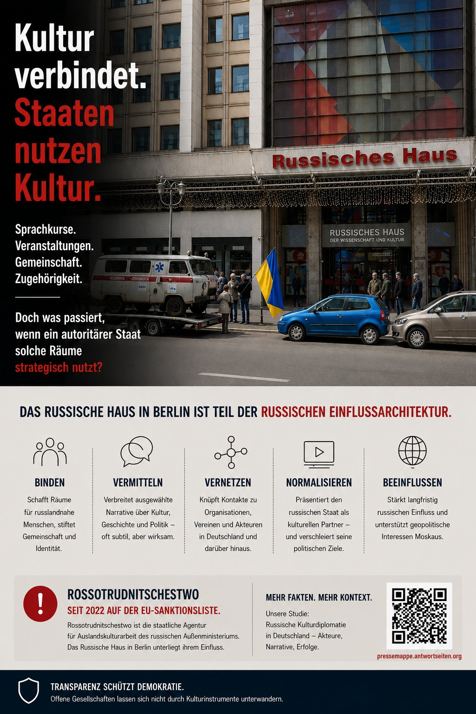
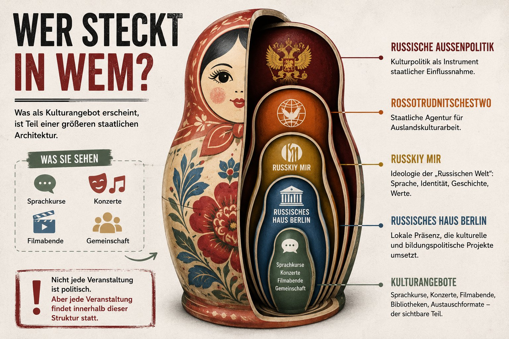
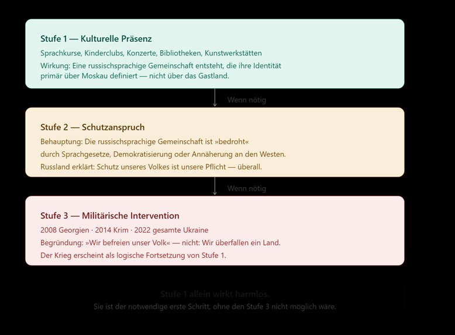

Auf den ersten Blick sehen das Goethe-Institut in Russland und das Russische Haus in Berlin wie symmetrische Einrichtungen aus: zwei staatlich finanzierte Kulturzentren, ein bilaterales Abkommen, gegenseitiger Sprachunterricht. Wer genauer hinschaut, sieht etwas anderes.

Das Russische Haus arbeitet nach der Doktrin von Russkiy Mir – der „Russischen Welt". Sie definiert alle Russischsprecher weltweit als Teil eines einzigen Volkes, das Moskaus Schutz verdient. Was wie Vokabelpauken aussieht, ist nicht zwangsläufig politisch – aber jede Veranstaltung findet innerhalb dieser Struktur statt.

Sechs strukturelle Unterschiede. Auf die Überschriften tippen, um die Details zu öffnen.
Erhebung von April bis Mai 2026, Quellen: russisches-haus.de und goethe.ru. Erfasst wurden alle Veranstaltungen beider Häuser, kategorisiert nach Format und inhaltlichem Narrativ.
Der Unterschied ist nicht graduell, sondern kategorial. Beim Goethe-Institut ist Kultur das Ziel. Beim Russischen Haus ist Kultur das Mittel.
Vier dokumentierte Risikobereiche. Auf die Überschriften tippen, um die Details zu öffnen.
2022 zeigte das Hauskino einen RT-Propagandafilm, der NS-Gräueltaten mit der Ukraine gleichsetzte – Ukrainer als Nazis, Russland als Befreier. Im Buchladen werden Werke russischer Kriegsideologen und Rechtsextremisten sowie Spielzeug verkauft, das den Angriffskrieg verherrlicht.
Die Programmanalyse zeigt: WW2-Narrative, Friedensrhetorik und Puschkin als imperiales Symbol sind kein Zufall, sondern koordiniertes Programm einer sanktionierten Behörde.
Das Russische Haus finanzierte laut Reuters Flugtickets für einen früheren russischen Luftwaffenoffizier und seine Freundin, die prorussische Autokorsos in Deutschland mitorganisierten – für eine Reise zu einem Kreml-Event in Moskau. Rossotrudnitschestwo soll prorussische Demonstrationen in Deutschland mitkoordiniert haben.
Sprachkurse, Kinderclub und Konversationsklub schaffen die Community-Infrastruktur, die politisch mobilisierbar ist – laut BfV ein Standardmuster russischer Einflussnahme.
Rossotrudnitschestwo steht seit Juli 2022 auf der EU-Sanktionsliste. Rechtsfolge: Einfrierung von Vermögenswerten und wirtschaftliches Bereitstellungsverbot. Trotzdem laufen täglich Veranstaltungen, Tickets werden kommerziell verkauft, Räume vermietet.
Die Berliner Staatsanwaltschaft stellte Ermittlungen nach dem Außenwirtschaftsgesetz ein – die Verantwortlichen haben Diplomatenstatus. Gleichzeitig zahlt Deutschland aufgrund des Liegenschaftsabkommens von 2013 jährlich rund 70.000 Euro Grundsteuer für das Gebäude.
Der Berliner Senat bestätigt offiziell: Zwischen PR auf Kulturfesten und nachrichtendienstlichem Sammeln geschützter Informationen verlaufen die Grenzen fließend. Das BfV stellt fest, dass Berlin vorrangiges Ziel russischer Geheimdienste in Europa ist – mit tausenden Zuträgern.
Die russische Post unterhält ihre weltweit erste Auslandsniederlassung in Berlin. Testberichte zeigen vereinfachte Zolldokumente, die den Sendungsinhalt schwer kontrollierbar machen.
Trotz laufender Ermittlungen, klarer Sanktionslage und politischer Forderungen aus CDU und Grünen haben die deutschen Behörden bisher keine wirksamen Maßnahmen ergriffen. Das bilaterale Abkommen von 2011 – und die Sorge um das Goethe-Institut in Moskau als Verhandlungsmasse – blockiert eine Schließung.
Die Kündigungsfrist des Tätigkeitsabkommens vom 4. Februar 2011 endet am 6. Dezember 2026. Eine Nicht-Kündigung wäre keine juristische Sackgasse, sondern eine politische Entscheidung.
Die Doktrin der „Russischen Welt" kennt drei Eskalationsstufen, die historisch nacheinander angewendet wurden:

2008 in Georgien, 2014 auf der Krim und 2022 in der gesamten Ukraine wurde dieselbe Logik angewendet. Putin erklärte in seiner Kriegsrede vom 24. Februar 2022 wörtlich, das Ziel sei der Schutz „russischsprachiger Bewohner des Donbass" – Stufe 2 als Begründung für Stufe 3.
Stufe 1 allein wirkt harmlos. Sie ist der notwendige erste Schritt, ohne den Stufe 3 nicht möglich wäre.
Die vollständige Strukturanalyse mit allen 179 kategorisierten Veranstaltungen, ausführlicher Sicherheitsbewertung und Quellenapparat ist auf Anfrage erhältlich. Wir geben sie nicht anonym heraus, sondern im direkten Austausch mit Journalist:innen, Politiker:innen und Wissenschaftler:innen, die das Thema weiter bearbeiten möchten.
Kontakt: gedenken.start@protonmail.com